Lorica Segmentata: The Armour from Corbridge
Lorica SegmentataRoman ArmourRoman ArmorSegmented ArmourCorbridge HoardCorbridge Roman Town
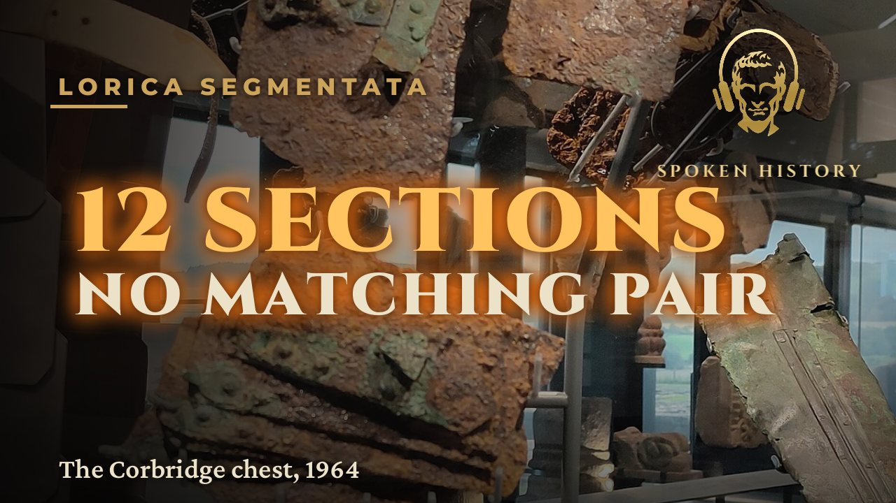
17 July 1964. Corbridge, in the north of England, close to Hadrian's Wall. A training dig, run by two universities, cuts a trench. The trench clips the corner of something in the ground: an iron-bound wooden box. Someone had sawn through the floorboards of a room, lifted them, buried the chest, and put the boards back. Later, a fire burned the building. It charred those boards, and the excavators could still see what had been done. The chest was packed tight, mostly with iron. And on top lay pieces of Roman body armour.
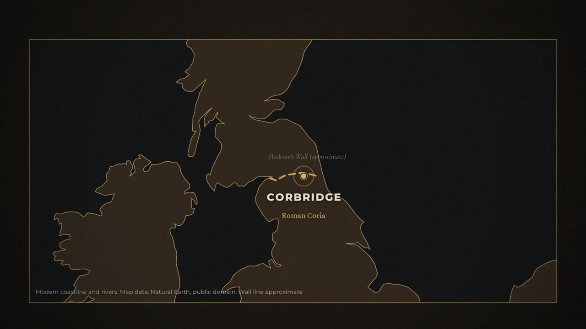
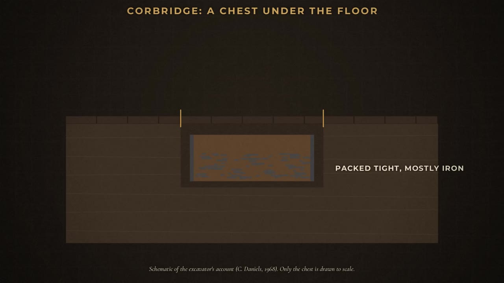
This is the armour most people picture when they think of a Roman soldier. Today: what it was, what has been dug up, and what the pictures and texts really tell us. And the first surprise is the name.
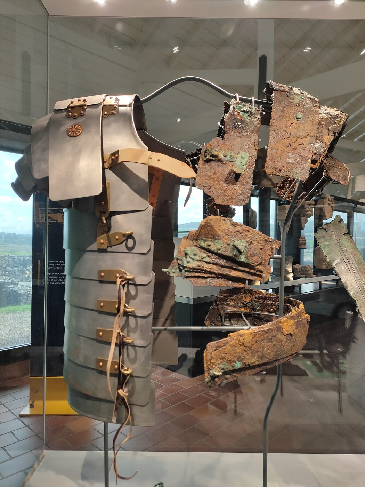
What is lorica segmentata?
So, what is it? Strips of iron plate, curved to fit the body. Some of the plates are about 1.5 to 2 millimetres thick. Leather straps riveted on the inside let the plates slide over each other. The whole thing comes apart into four units. One for each shoulder, and one for each side of the body. Small hinges and buckles of copper alloy, and hooks, hold it together.
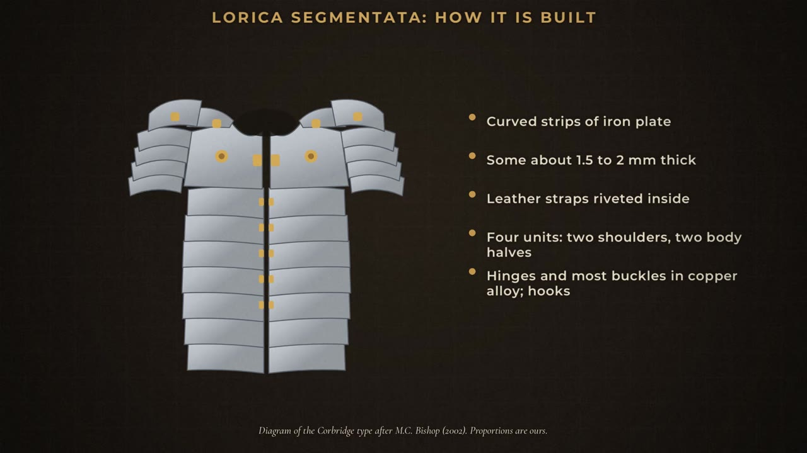
A name no ancient text uses
We call it lorica segmentata. But that is not what the Romans called it. Lorica just means body armour. The Roman scholar Varro says the word comes from lora, thongs of rawhide, because the first chest protectors were made of them. Segmentata is a Latin word, but no ancient text uses it for armour, and the real Roman name is lost. The phrase is in print by 1596, in a book on the Roman army by the scholar Justus Lipsius. And Lipsius was honest about his evidence. In our translation: I have read of it nowhere, I admit. But on Trajan's Column, on the Roman soldier, this kind is constant, almost the only one. So the name was made for armour seen in stone, not read in a Roman text. Keep that in mind.
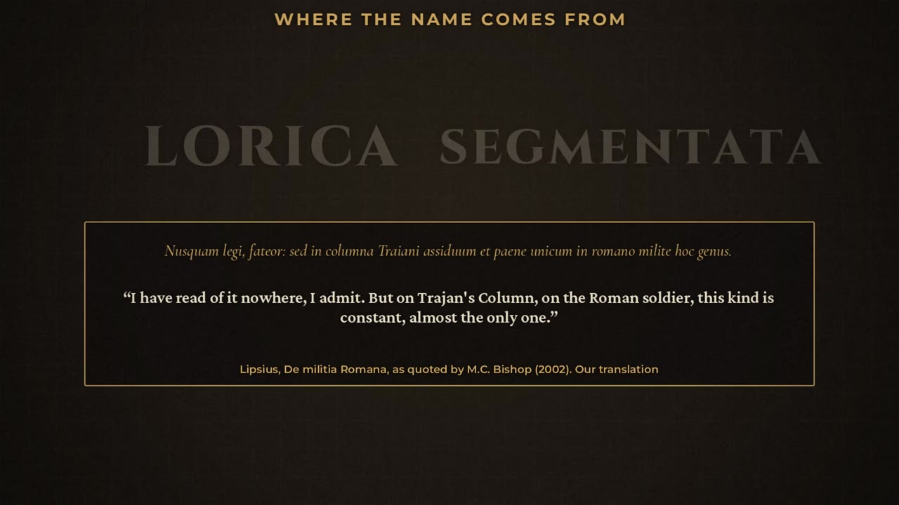
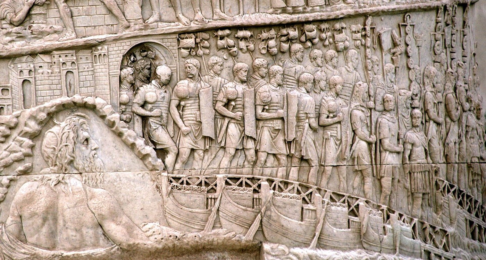
Did you know? The name lorica segmentata is not Roman. It is in print by 1596, in Justus Lipsius' book on the Roman army, and Lipsius admitted he had read of this armour nowhere: he had seen it on Trajan's Column.
What was in the Corbridge chest
Back to Corbridge. What else was in that chest? Spearheads tied in bundles with rope. Tools. Hundreds of nails, many of them used. Writing tablets. A wooden tankard. And, in the first report, 47 little glass gaming counters. 21 black, 25 white, and one whose colour nobody could tell. The armour came in twelve sections. Six for the shoulders, six for the body. And not one of them made a matching pair with another. Some had been wrapped in cloth. The excavator, Charles Daniels, called them a collection of unmatched random pieces.
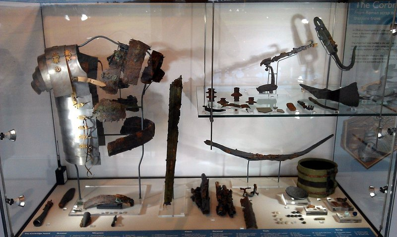
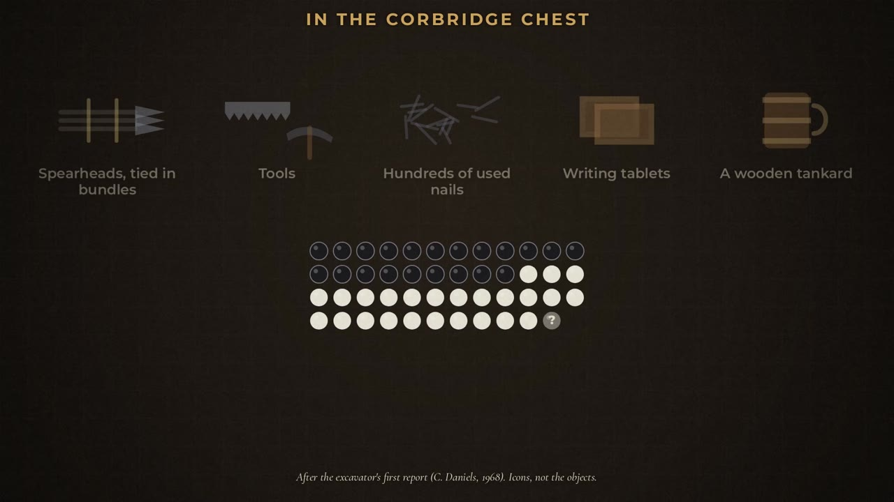
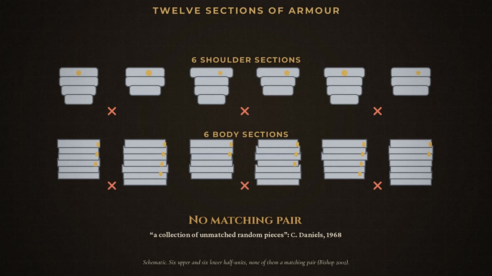
Did you know? Packed in the Corbridge chest with the armour were 47 small glass gaming counters: 21 black, 25 white and one whose colour could not be made out (C. Daniels, first report, 1968).
Hidden in a hurry, or stored?
Why bury it? Daniels thought the fort was under attack, and that someone cleared a workshop in a hurry and hid the metal. English Heritage, who look after the site today, read it more calmly. Most likely, stored away for an owner who meant to come back for it, and never did. Even the date has moved. Daniels dated it to before the fort burned, and put that fire some time after A.D. 98. English Heritage now dates the contents to A.D. 122 to 138. Hidden in a hurry, or stored with care? The evidence fits both, and nobody can prove either.
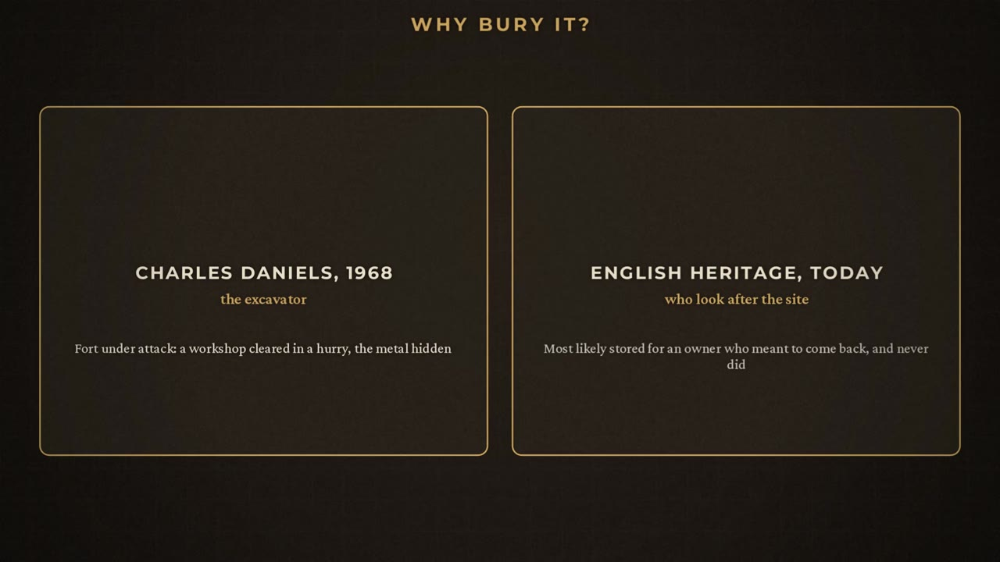
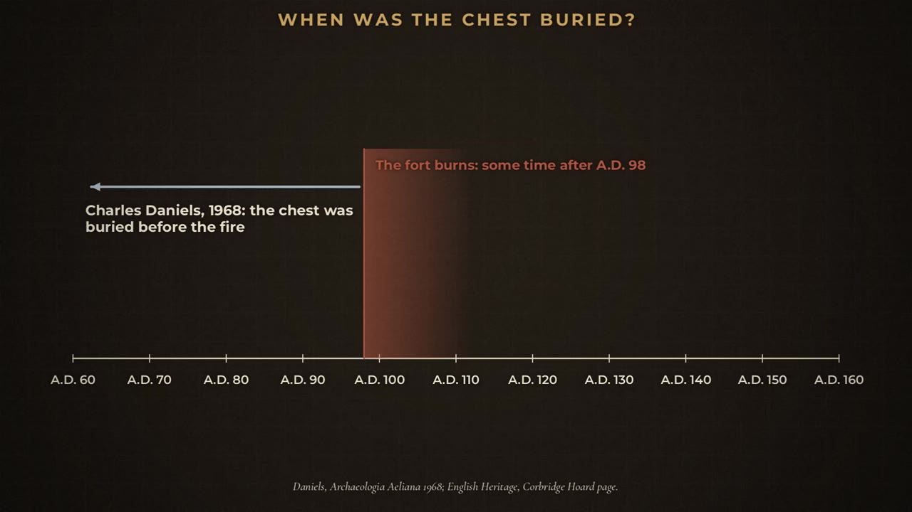
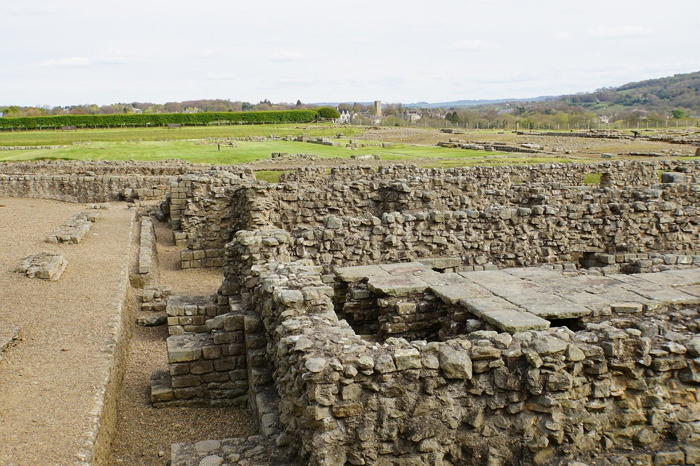
Before Corbridge: the wrong reconstructions
Why does that chest matter so much? Before it, nobody could work out how this armour went together. In 1899, at a Roman legionary base on the Danube, the Austrian officer Max von Groller found 302 fragments. He used Trajan's Column as his guide, and decided the plates were fixed onto a short-sleeved leather jacket. In 1905, in Scotland, James Curle found larger pieces deep in a pit in the Roman fort at Newstead. He published the main plates turned at right angles to the way they were worn. Neither man was careless. The pieces were too few, and the column was a poor guide.
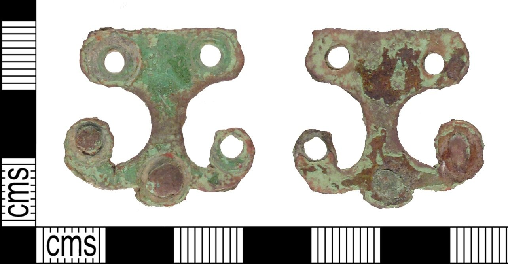
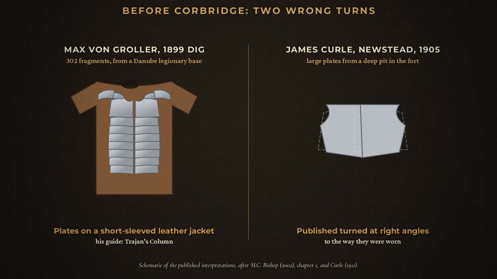
Cardboard, an armourer and three types
Corbridge changed that. But first, the rusted pieces had to be put back together, like a huge jigsaw puzzle. Charles Daniels worked out the shapes, and sent sketches and cardboard mock-ups to Russell Robinson, a practising armourer from the Tower Armouries in London. By 1969, Robinson had working replicas. The look we know today comes from that work. He found three versions in the chest, now called Corbridge A, B and C. They differ mainly in how the body bands hang from the shoulders. Buckles and leather straps in A, hooks and loops in B and C. The archaeologist Mike Bishop, who wrote a handbook on this armour, thinks C may just be a one-off repair.
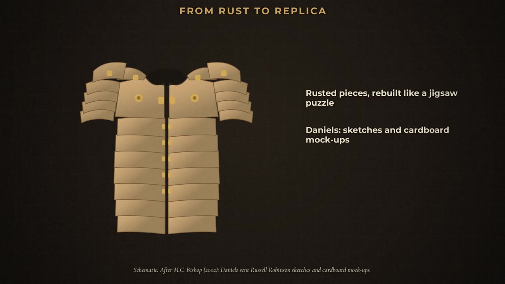
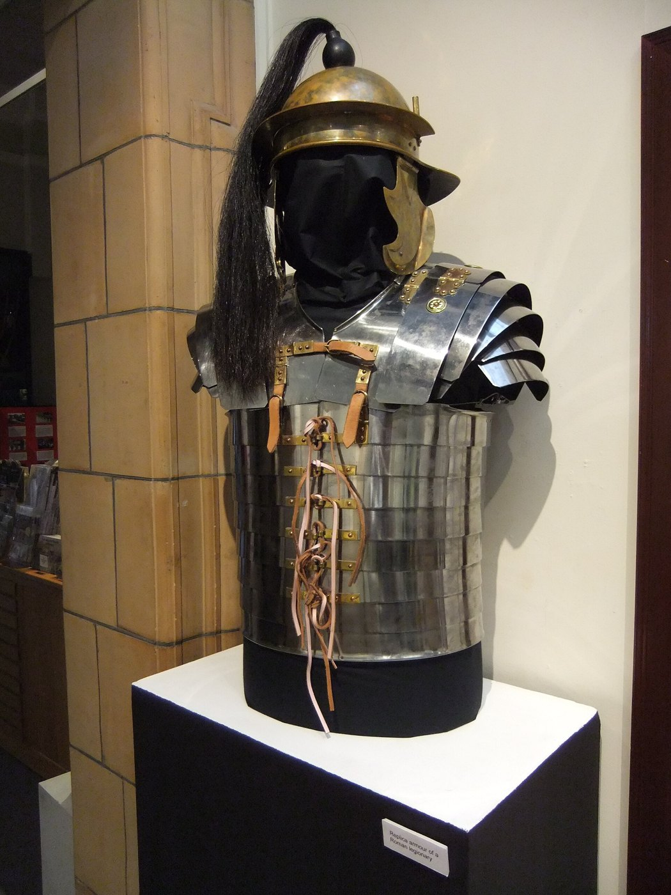
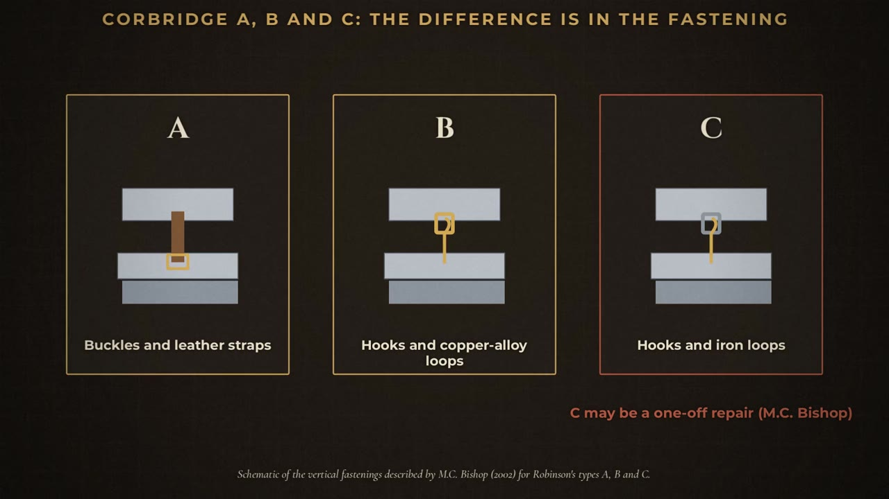
Kalkriese, 2018: a block of soil
For more than 50 years, Corbridge was the best we had. Then, in 2018, archaeologists at Kalkriese in northern Germany found a large metal object in the ground. They lifted it out in one block of soil, about 1.25 by 1 metre, and around 500 kilos. A customs X-ray at the local airport showed almost nothing through the soil. So the block went into a giant CT scanner, and turned for several days. Then an email arrived. It really was a Roman segmented cuirass. The soil had pushed the plates into each other, like the folds of an accordion. About 30 plates, says the museum, with only 4 or 5 missing. It calls this the oldest surviving Roman segmented cuirass, and the only one that is nearly complete.
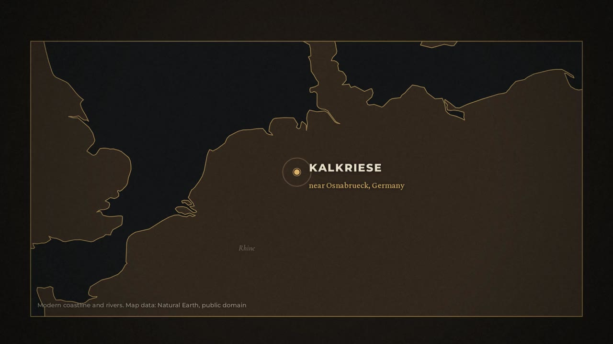
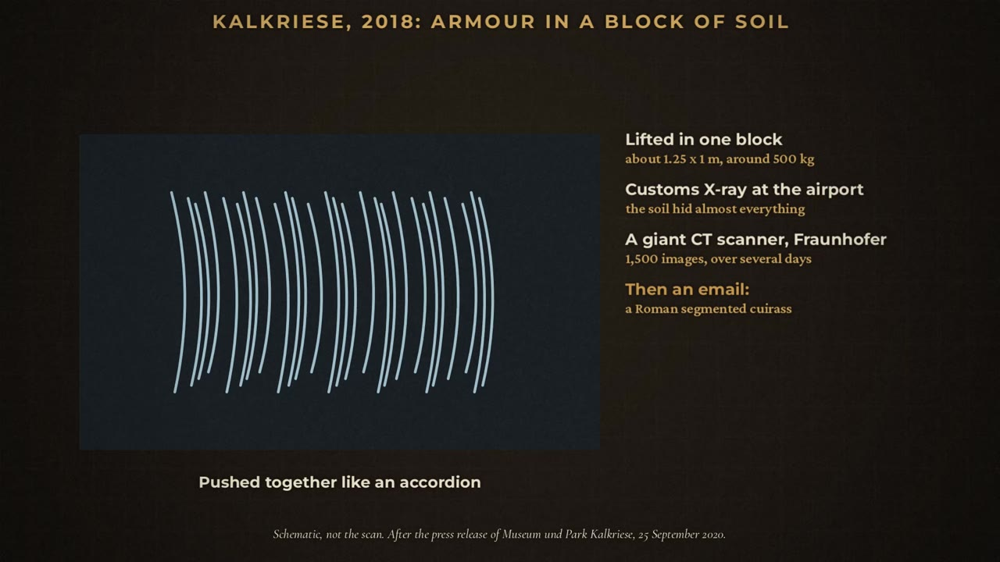
Did you know? The Kalkriese armour first went through a customs X-ray at an airport, which showed almost nothing through the soil. Only a giant CT scanner revealed what was inside the block.
Sources for Kalkriese: the museum's press releases of 25 September 2020 and June 2023.
Older, and different
Kalkriese is widely thought to be the site of the Varus disaster of A.D. 9. In that disaster, Suetonius says, three legions were cut down with their commander. Some scholars disagree, and see a battle six years later. One review of the debate found no clear resolution. Either way, the museum puts this armour more than a hundred years before the Corbridge pieces. And it is not quite the armour we expected. It has no plates over the upper arms. The museum compares it to a vest. And it is well made. The museum sees a trend over time towards simpler, less careful work, not the other way round. One more thing lay in the block, at the neck and shoulders. A neck shackle, the kind used on prisoners and slaves. In 2020 the museum said the whole scene suggests a Roman soldier who survived the fight, and was shackled by the victors. Three years later, its exhibition put it as a question. Why was this armour left lying on a battlefield that was otherwise thoroughly plundered? We don't know.

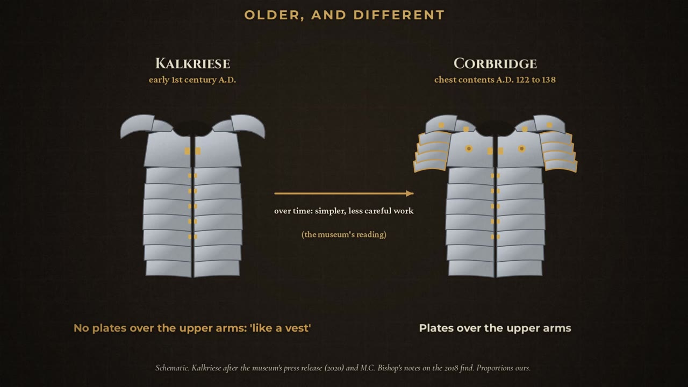
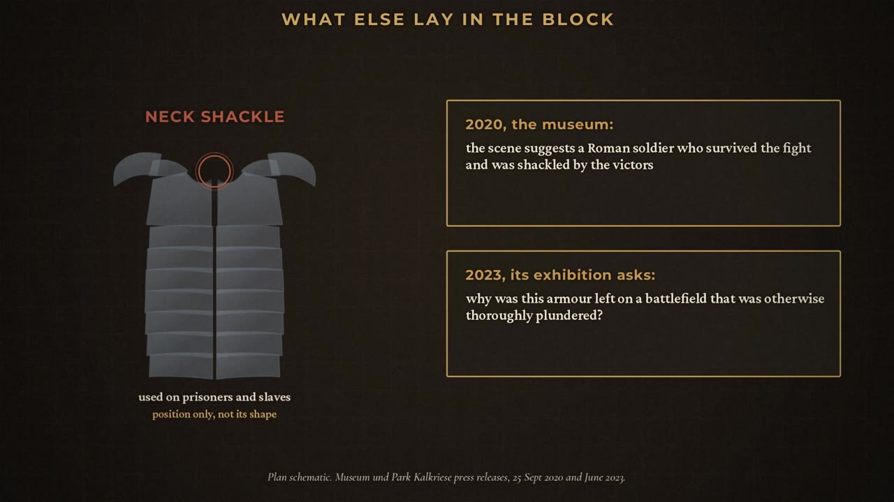
Where and when: the types
So where does it all fit? The earliest pieces found so far come from a Roman base at Dangstetten, on the Rhine near the Swiss border, from around 9 B.C. Bishop names the main types after the finds: Kalkriese, Corbridge and Newstead, overlapping one another from about 10 B.C. to about A.D. 250. And when did it go out of use? Bishop says not before the later third century. A Spanish study of finds from León argues the Newstead type was still fully in use there in the first half of the fourth.
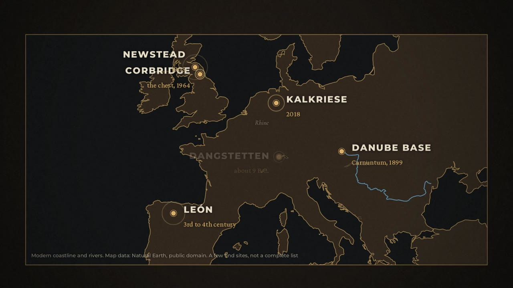
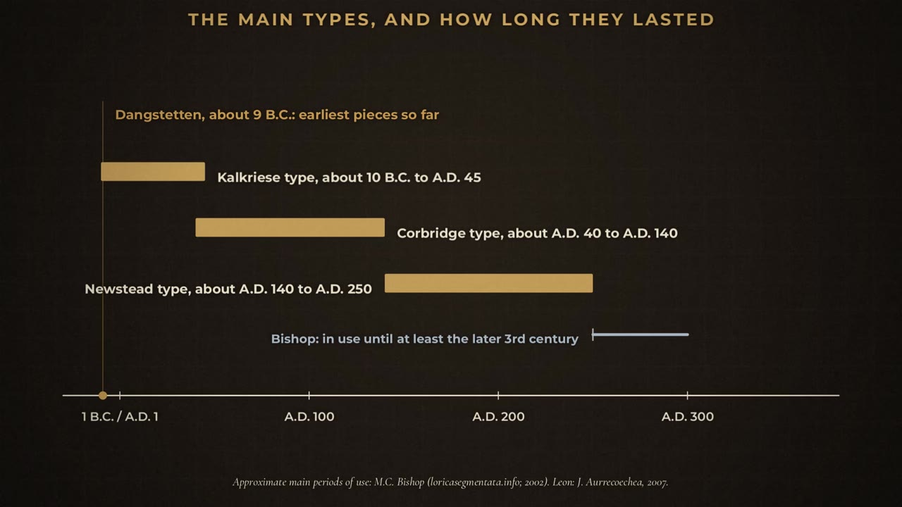
Trajan's Column, counted
Now, back to Lipsius and his column. Trajan's Column in Rome celebrates Trajan's wars beyond the Danube, in what is now Romania. Its spiral carries 2,639 human figures. On it, segmented armour is the uniform of the citizen troops. The archaeologist Jon Coulston counted what those troops are doing. Of 182 figures doing building work, only 3 are not in it. But of 161 Roman figures fighting, only 17 wear it. 118 fight in mail. Coulston's verdict: the column shows figure types, not field reports. It cannot be used as an independent source for military equipment.
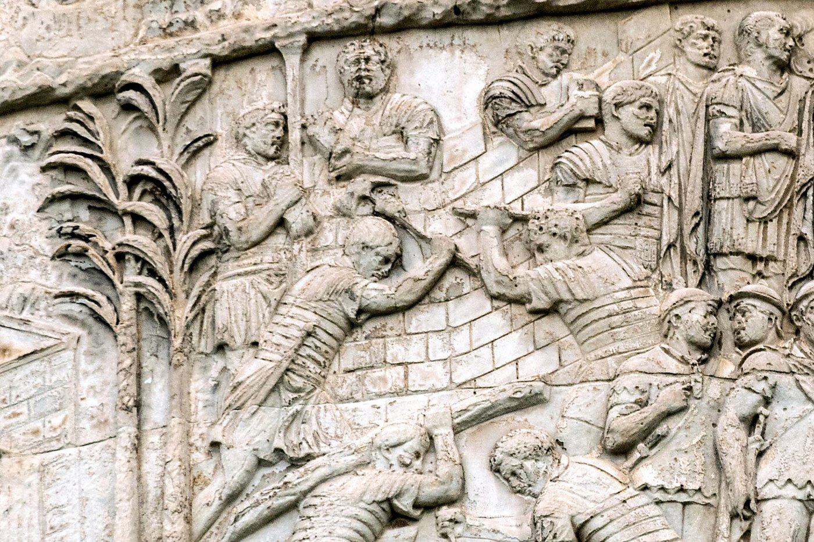
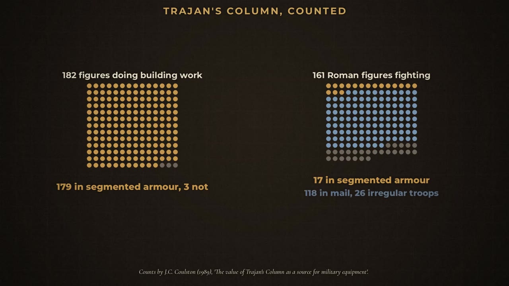
Did you know? On Trajan's Column, of 161 Roman figures shown fighting, only 17 wear the famous segmented armour and 118 fight in mail; of 182 figures doing building work, only 3 are not in it (J.C. Coulston, 1989).
Adamclisi: no segmented armour
There is a second monument to the same wars, at Adamclisi in Romania. There, the legionaries wear mail or scale, with guards on their sword arms and greaves on their shins. Not one segmented cuirass. Why? Some scholars think it shows special kit for that front, others the gear of the local units. Bishop sees two ideas of a legionary: one carved in Rome, one in the provinces. From the stone alone, nobody can settle it.
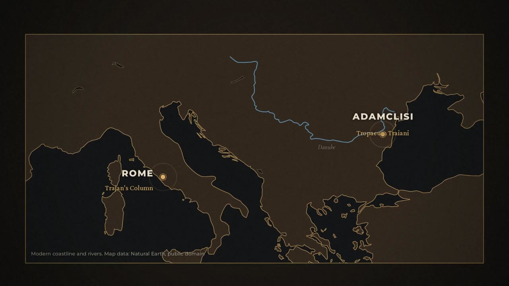
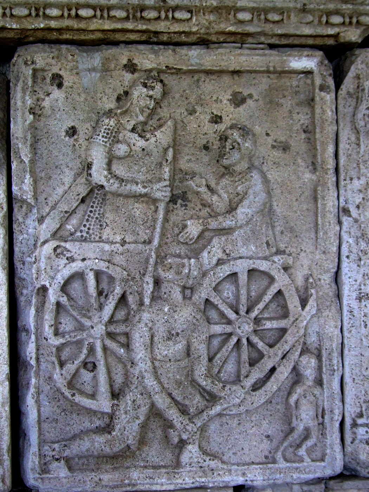
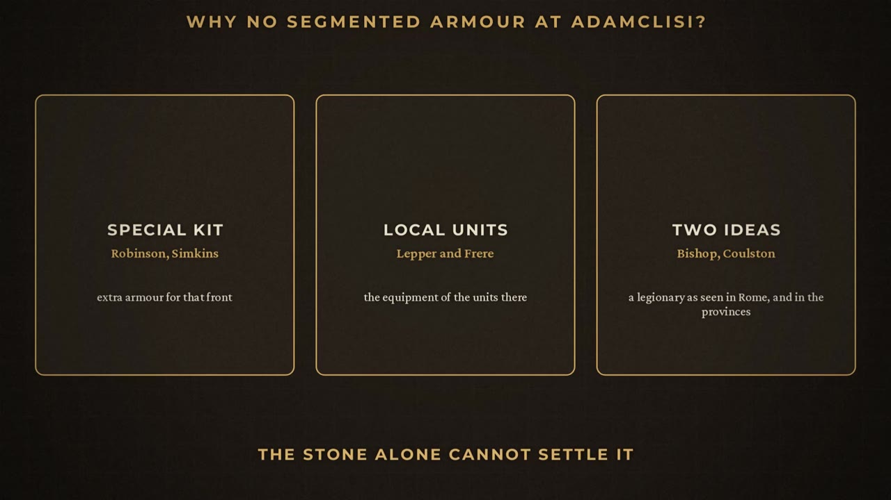
Weight and repairs
How heavy was it? The Kalkriese museum says about 8 kilos, half the weight of a mail shirt. Bishop is more careful. Modern replicas weigh 5 to 9 kilos, a replica mail shirt 8 or 9, and more if riveted like Roman mail. The true Roman weight, he writes, waits for a cuirass made with Roman materials and methods. What we do know is that it needed constant care. Nearly every piece ever found shows repairs. In the Corbridge chest, one cuirass seems to have been given the shoulder pieces of another. Hinges were replaced, or the plates were simply riveted together. And on this type, hinge pins were often replaced with bent wire. Its fittings turn up far more often than parts of mail. Was it the most common armour, or did it just fall apart more often? Bishop calls that unknowable.
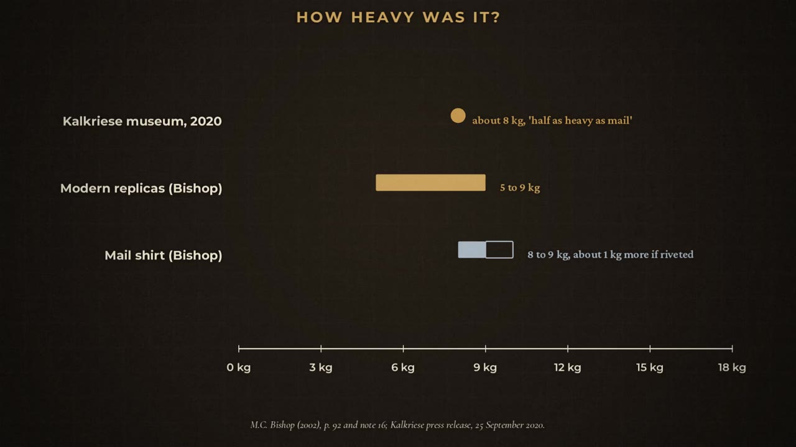
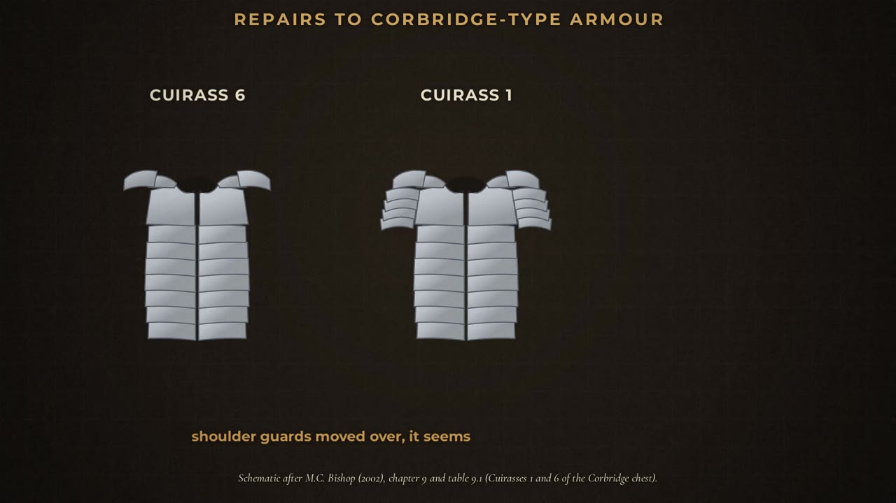
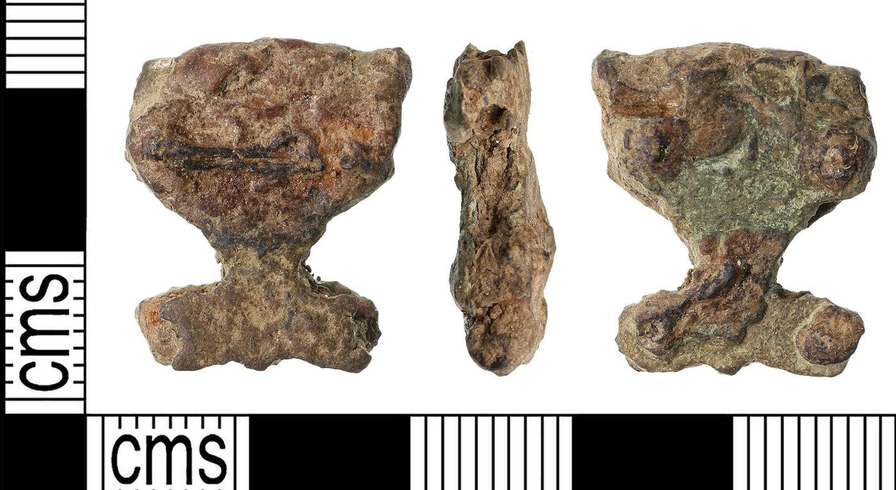
What we really have
So, what do we really have? Twelve unmatched sections at Corbridge. A crushed, nearly complete cuirass at Kalkriese. Fittings from Scotland to the Danube, and Spain. What we don't have: its Roman name, a Roman description of it, or its true weight. And its most famous picture, Trajan's Column, turns out to be a poor witness for what soldiers wore in the field.
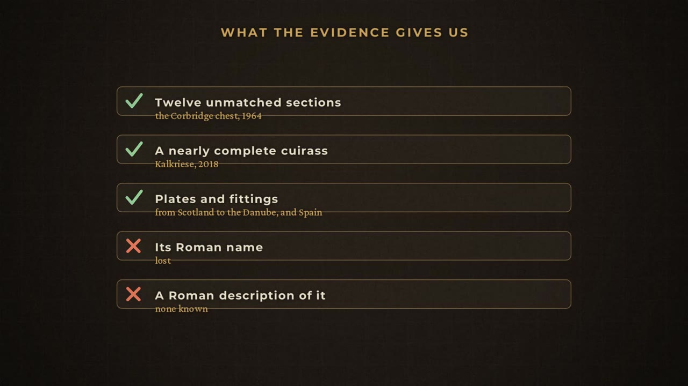
Verdict, and what comes next
So that's the armour from Corbridge. A sixteenth-century name for armour seen in stone, and a shape that only a box of rusty pieces could explain.
Over to you
Was the Corbridge chest hidden in a panic, or stored for an owner who never came back? Trajan's Column or Adamclisi: which picture of a legionary would you trust? What next: the sling bullets or the scutum?
Prefer to watch? The video on YouTube covers the same story with the full animations. Jump to a part:
- 0:00 A chest under the floor, 1964
- 1:02 What is lorica segmentata?
- 1:29 A name no ancient text uses
- 2:21 What was in the Corbridge chest
- 3:04 Hidden in a hurry, or stored?
- 3:44 Before Corbridge: the wrong reconstructions
- 4:26 Cardboard, an armourer and three types
- 5:17 Kalkriese, 2018: a block of soil
- 6:09 Older, and different
- 7:17 Where and when: the types
- 7:52 Trajan's Column, counted
- 8:37 Adamclisi: no segmented armour
- 9:08 Weight and repairs
- 10:05 What we really have
- 10:30 Verdict, and what comes next
Quick answers
What was the lorica segmentata?
Roman body armour of curved iron strips riveted to leather straps on the inside, so the plates could slide over each other. It came apart into four units, one for each shoulder and one for each side of the body, held together by small hinges and buckles of copper alloy, and hooks.
Did the Romans call it lorica segmentata?
No ancient text calls the armour that. Lorica is the Latin word for body armour, but the real Roman name for this type is lost. The phrase is in print by 1596, in Justus Lipsius' book on the Roman army, and Lipsius admitted he had read of this armour nowhere: he had seen it on Trajan's Column.
What is the Corbridge Hoard?
A chest found on 17 July 1964 at Corbridge, close to Hadrian's Wall, buried under the floorboards of a room. It held tools, spearheads, nails, writing tablets, glass gaming counters and twelve sections of segmented armour, six for the shoulders and six for the body, and not one made a matching pair. Why it was buried is disputed.
What was found at Kalkriese in 2018?
A nearly complete segmented cuirass, lifted in one block of soil and revealed by a giant CT scanner. The museum counts about thirty plates with four or five missing and calls it the oldest surviving Roman segmented cuirass and the only nearly complete one. It has no plates over the upper arms, and a neck shackle lay at its neck and shoulders.
How heavy was the lorica segmentata?
We do not know. The Kalkriese museum says about eight kilos, half the weight of a mail shirt. M.C. Bishop gives five to nine kilos for modern replicas and eight or nine for a replica mail shirt (about one kilo more if riveted like Roman mail), and says the true Roman weight waits for a cuirass made with Roman materials and methods.
Did every Roman legionary wear segmented armour?
We cannot say. On Trajan's Column only 17 of 161 Roman figures shown fighting wear it, and 118 fight in mail. On the Adamclisi monument to the same wars the legionaries wear mail or scale. Its fittings are found more often than parts of mail, but Bishop calls the reason unknowable.
Where it happened
- Corbridge (Roman Coria), England (A.D. 1964): The chest found on 17 July 1964 under the floor of a room east of the principia; contents dated A.D. 122 to 138 by English Heritage.
- Kalkriese, Germany (A.D. 2018): The nearly complete cuirass found in 2018 at the site widely thought to be the Varus battlefield of A.D. 9.
- Newstead (Trimontium), Scotland (A.D. 1905): James Curle found plates in a deep pit in the headquarters building in 1905.
- Carnuntum, Austria (A.D. 1899): Max von Groller found 302 fragments in 1899.
- Dangstetten, Germany (9 B.C.): The earliest pieces found so far, around 9 B.C.
- León, Spain (A.D. 300): Finds that a 2007 study dates as late as the first half of the 4th century.
- Trajan's Column, Rome (A.D. 110): Erected in Trajan's Forum, c. A.D. 106 to 131 according to M.C. Bishop (2002). The relief that gave the armour its look and, through Lipsius, its modern name.
- Tropaeum Traiani, Adamclisi, Romania (A.D. 110): A provincial monument contemporary with Trajan's Column (M.C. Bishop 2002); its legionaries wear mail or scale.
Sources
Ancient writers and modern work
Research for this episode was done on 14 November 2026. Everything below was read directly unless it says otherwise.
Excavation reports and finds
**C. M. Daniels, "A hoard of iron and other materials from Corbridge", Archaeologia Aeliana, 4th series, 46 (1968), 115 to 126.** Full text (PDF, Archaeology Data Service): https://archaeologydataservice.ac.uk/catalogue/adsdata/arch-3433-1/dissemination/AAseries4/AA446new/archael446-000-000-PDFs/archael446-115-126-daniels.pdf
The excavator's preliminary report. It supports:
Daniels' own count of armour sections in 1968 was preliminary; the twelve sections in the video follow Bishop (below).
**English Heritage, "The Corbridge Hoard: A Roman Time Capsule"** (Corbridge Roman Town pages), https://www.english-heritage.org.uk/visit/places/corbridge-roman-town-hadrians-wall/things-to-do/the-corbridge-hoard/ . Supports: an "iron-bound, leather-covered wooden chest"; contents "dating from between AD 122 and 138"; armour, tools, weaponry, wax writing tablets and papyrus; the reading that it was "most likely a way of looking after the material until its owner was able to come and retrieve it ... the owner never came back for it"; the display of the original armour next to a replica.
**J. Curle, A Roman Frontier Post and its People: the Fort of Newstead in the Parish of Melrose (Glasgow 1911)**, Internet Archive full text: https://archive.org/details/romanfrontierpos0000jame . Supports: the deep pit in the headquarters building, dug in September 1905; "fragments of an iron cuirass with brass mountings" near its bottom; pp. 156 to 158 on the "so-called lorica segmentata" and on von Groller's Carnuntum reconstruction; plate thickness "about a sixteenth of an inch".
**Museum und Park Kalkriese, press release "Römischer Schienenpanzer in Kalkriese entdeckt", 25 September 2020** (PDF on kalkriese-varusschlacht.de): https://www.kalkriese-varusschlacht.de/fileadmin/user_upload/varusschlacht/0_allgemein/images/Archaeologie/Presse/2020-09-25_PI_Schienenpanzer_Kalkriese.pdf . Read in German; translations ours. Supports: found in 2018 with the University of Osnabrück; a "very large metal object" lifted in one block, 1.25 x 1.00 m, about 500 kg; the customs X-ray at Münster/Osnabrück airport showed only that it was large and metal; the Fraunhofer EZRT XXL-CT in Fürth, 1,500 images over a several-day 360-degree rotation; then an email confirming a Roman segmented cuirass; plates pushed together "wie bei einer Ziehharmonika" (like an accordion); "30 einzelne Platten; es fehlen lediglich vier bis fünf"; "der älteste und der einzig erhaltene römische Schienenpanzer"; Corbridge "über 100 Jahre jünger"; no plates on the upper arms, "mehr einer Weste"; high craftsmanship and a later "Trend zur Vereinfachung und handwerklichen Qualitätsminderung"; a neck shackle (Halsgeige) at the neck and shoulders, a restraint for prisoners and slaves; "Die gesamte Fundsituation legt nahe ..." (a survivor shackled by the victors); weight "rund 8 kg ... nur halb so schwer" as mail. The release also says the armour was standard until the 4th century; the video does not repeat that sentence because Bishop and the Leon study disagree on the end date (see Disputes).
**Museum und Park Kalkriese / Landkreis Osnabrück, press release "COLD CASE – Tod eines Legionärs", June 2023** (docx): https://www.landkreis-osnabrueck.de/sites/default/files/2023-06/2023-06-pi-soa-cold-case-tod-eines-legionars.docx . Supports: first public display in 2023 (10 June to 5 November); "Warum blieb der Schienenpanzer auf dem ansonsten gründlich geplünderten Schlachtfeld in Kalkriese liegen? Triumphritual? Zufall?"; finds near the cuirass (a pilum, the remains of a mule with a chain, a dagger sheath).
**J. Aurrecoechea Fernández, "Las armaduras segmentadas (loricae segmentatae) en los yacimientos romanos de la provincia de León: un estudio de conjunto", Archivo Español de Arqueología 80 (2007), 153 to 182, doi:10.3989/aespa.2007.v80.31.** Full text read (open access). Supports: Leon sites give the latest dates in the Empire for the Corbridge and Newstead types; the Corbridge type lasted in Hispania "por lo menos, hasta el último cuarto del siglo III"; the Newstead type "aún estaba plenamente vigente durante la primera mitad del siglo IV"; the author argues for extending the life of segmented armour to the 4th century generally.
**Portable Antiquities Scheme records (via Wikimedia Commons):** a Corbridge-type shoulder hinge (FindID 925427) and a lobate hinge fragment (FindID 516435), both dated 1st to 2nd century A.D. Used only as photographs of loose fittings.
Modern scholarship
**M. C. Bishop, Lorica Segmentata, Volume I: A Handbook of Articulated Roman Plate Armour (JRMES Monograph 1, Armatura Press, 2002).** Full PDF published by the author: https://lorseg.mcbishop.co.uk/wp-content/uploads/2020/09/Bishop2002.pdf . The main source of the episode. Read: chapter 1 (the name; past work by von Groller, Curle, Webster, Robinson, Poulter), chapter 2 (iconography including Trajan's Column and Adamclisi; the Corbridge Hoard as a jigsaw; experimental work), chapter 3 (early forms, Dangstetten), the Corbridge-type description (p. 31 to 32: types A, B and C and their vertical fastenings), chapter 9 (maintenance, repairs, table 9.1, storage, the twelve unmatched half-units), chapter 10 (weight, development). Specific points used:
**M. C. Bishop, loricasegmentata.info** (redirect from lorseg.mcbishop.co.uk): introduction and the pages on the Kalkriese, Corbridge, Newstead and Alba Iulia types. Supports: main periods of use "c.10 B.C. to A.D. 45" (Kalkriese), "c. A.D. 40 to 140" (Corbridge), "c. A.D. 140 to 250" (Newstead); in use "until at least the latter part of the 3rd century AD"; the 2018 Kalkriese find had no lesser shoulder guards and upper guards curved at the end, girth hoops fastened with straps and buckles; Robinson "of the Tower Armouries"; the Corbridge chest held 12 sections, six shoulder and six torso, none matching.
**J. C. Coulston, "The value of Trajan's Column as a source for military equipment", in C. van Driel-Murray (ed.), Roman Military Equipment: the Sources of Evidence, BAR International Series 476 (Oxford 1989), 31 to 44.** PDF: https://a-r-m-e-s.org/wp-content/uploads/2023/09/476-031-044-Coulston.pdf . Supports: the frieze has "no less than 2,639 human figures"; segmentata-wearers are citizen troops by figure type; "of 182 figures on the column engaged in construction work only 3 are not in 'segmentatae'"; "Of 161 Roman figures in fighting poses, 118 are in hamatae, 26 are symmachiarii and only 17 are in 'segmentatae'"; the column "cannot be employed as an independent source for military equipment"; most detail was invisible even from the highest viewpoints. The volume details (BAR 476, 1989) were confirmed from library records found by search. The author's first name, Jon (Jonathan C. N. Coulston, University of St Andrews), was confirmed by the fact-checker from the St Andrews staff pages, https://www.st-andrews.ac.uk/catch/staff/dr-jon-coulston/ .
**R. Cowan, review of M. Thomas, Lorica Segmentata Volume II: A Catalogue of Finds (2003), Bryn Mawr Classical Review 2004.02.49**, https://bmcr.brynmawr.edu/?p=23903 . Supports: the armour is the one most popularly associated with the Roman soldier; the term is modern; early fragments from Dangstetten and Kalkriese; the catalogue covers finds from 16 countries, nearly all European, plus Morocco. Used for H2 and as background.
**J. F. Drinkwater, review of G. A. Lehmann and R. Wiegels (eds.), Römische Präsenz und Herrschaft im Germanien der augusteischen Zeit (2007), sehepunkte 8 (2008), no. 9**, https://sehepunkte.de/2008/09/13856.html . Supports: Kalkriese is commonly taken as the site of the Varian disaster; R. Wolters argues for Caecina's battle at the Long Bridges in A.D. 15; Drinkwater: "no clear resolution", the anti-Varus case "unproven".
Ancient texts (read in Latin; translations ours unless a translator is named)
Disputes named in the video
Image sources
Every picture is listed with page URL, author and licence in `image-manifest.json` and in `src/plan.py` (CREDITS). Images: Wikimedia Commons, licences CC0, CC BY 2.0/3.0/4.0, CC BY-SA 2.0/3.0/4.0 and public domain. There is no licensed photograph of the Kalkriese cuirass; it appears only in our labelled schematic animations.
Image credits
- Original pieces from the Corbridge chest (right) and a modern replica (left). Corbridge Roman Town museum. Photo: FropFrop, CC BY-SA 4.0
- Modern replica, Corbridge type A. Celtic Roman Museum Manching. Photo: Wolfgang Sauber, CC BY-SA 3.0
- Trajan's Column, Rome: soldiers at work (detail). Photo: Rabax63, CC BY-SA 4.0
- Modern replica, Corbridge type A. Worcester City Art Gallery and Museum. Photo: Rept0n1x, CC BY-SA 3.0
- Trajan's Column, Rome: troops crossing a river (detail). Photo: Rabax63, CC BY-SA 4.0
- Pieces from the Corbridge chest with a modern replica. Corbridge Roman Town museum. Photo: Mike Bishop, CC BY-SA 3.0
- Corbridge Roman Town today. Photo: Bill Boaden, geograph.org.uk, CC BY-SA 2.0
- Lobate hinge fitting from a Corbridge-type cuirass, 1st to 2nd century A.D. Portable Antiquities Scheme (Sussex Archaeological Society), CC BY-SA 2.0
- Modern reconstruction of a Roman legionary. Museum het Valkhof, Nijmegen. Photo: Carole Raddato, CC BY-SA 2.0
- The museum park at Kalkriese today, seen from the museum tower. Photo: Corradox, CC BY-SA 3.0
- Terrain model in the museum park at Kalkriese. Photo: Fewskulchor, CC BY-SA 3.0 de
- Trajan's Column, Rome, today. Photo: Jebulon, CC0
- Trajan's Column, plaster cast, National History Museum of Romania, Bucharest. Photo: Joe Mabel, CC BY-SA 3.0
- Trajan's Column, plaster cast, National History Museum of Romania, Bucharest. Photo: CristianChirita, CC BY-SA 3.0
- Trajan's Column, plaster cast, Bucharest: a battle (detail). Photo: Joe Mabel, CC BY-SA 3.0
- Tropaeum Traiani, Adamclisi, metope XXXV: a legionary in mail with an arm guard. Adamclisi museum. Photo: Cristian Chirita, CC BY-SA 3.0
- Tropaeum Traiani, Adamclisi, a metope. Adamclisi museum. Photo: Cristian Chirita, CC BY-SA 3.0
- Hinged fitting from the shoulder plates of a Corbridge-type cuirass, 1st to 2nd century A.D. Portable Antiquities Scheme, CC BY 2.0
- Trajan's Column, plaster cast, Bucharest. Photo: CristianChirita, CC BY-SA 3.0
- Corbridge Roman Town today. Photo: Michael Garlick, geograph.org.uk, CC BY-SA 2.0
- Animations, maps and diagrams: original work, Spoken History. Map data: Natural Earth, public domain.
- Music: Brahms - Symphony No. 4 in E minor, Op. 98 - II. Andante moderato (Musopen Symphony): Johannes Brahms; released to the public domain by Musopen (PD-author on the Commons file page)
- Music: Ludwig van Beethoven — Cello Sonata No. 3 (2nd movement): Ludwig van Beethoven; CC0 on the Commons file page
- Music: Schubert - Piano Sonata No. 19 in C minor, D958 - II. Adagio (Paul Pitman): Franz Schubert; released to the public domain by Musopen (PD-author on the Commons file page)
- Music: Chopin - Nocturne No. 21 in C minor, B. 108 (Diana Hughes): Frédéric Chopin; released to the public domain by Musopen (PD-author on the Commons file page)
- Music: Chopin - Nocturne No. 10 in A-flat major, Op. 32 No. 2 (Olga Gurevich): Frédéric Chopin; released to the public domain by Musopen (PD-author on the Commons file page)
Transcript
Read the full narration
Lorica Segmentata. The armour in the Corbridge chest. 17 July 1964. Corbridge, in the north of England, close to Hadrian's Wall. A training dig, run by two universities, cuts a trench. The trench clips the corner of something in the ground: an iron-bound wooden box. Someone had sawn through the floorboards of a room, lifted them, buried the chest, and put the boards back. Later, a fire burned the building. It charred those boards, and the excavators could still see what had been done. The chest was packed tight, mostly with iron. And on top lay pieces of Roman body armour. This is the armour most people picture when they think of a Roman soldier. Today: what it was, what has been dug up, and what the pictures and texts really tell us. And the first surprise is the name. So, what is it? Strips of iron plate, curved to fit the body. Some of the plates are about 1.5 to 2 millimetres thick. Leather straps riveted on the inside let the plates slide over each other. The whole thing comes apart into four units. One for each shoulder, and one for each side of the body. Small hinges and buckles of copper alloy, and hooks, hold it together. We call it lorica segmentata. But that is not what the Romans called it. Lorica just means body armour. The Roman scholar Varro says the word comes from lora, thongs of rawhide, because the first chest protectors were made of them. Segmentata is a Latin word, but no ancient text uses it for armour, and the real Roman name is lost. The phrase is in print by 1596, in a book on the Roman army by the scholar Justus Lipsius. And Lipsius was honest about his evidence. In our translation: I have read of it nowhere, I admit. But on Trajan's Column, on the Roman soldier, this kind is constant, almost the only one. So the name was made for armour seen in stone, not read in a Roman text. Keep that in mind. Back to Corbridge. What else was in that chest? Spearheads tied in bundles with rope. Tools. Hundreds of nails, many of them used. Writing tablets. A wooden tankard. And, in the first report, 47 little glass gaming counters. 21 black, 25 white, and one whose colour nobody could tell. The armour came in twelve sections. Six for the shoulders, six for the body. And not one of them made a matching pair with another. Some had been wrapped in cloth. The excavator, Charles Daniels, called them a collection of unmatched random pieces. Why bury it? Daniels thought the fort was under attack, and that someone cleared a workshop in a hurry and hid the metal. English Heritage, who look after the site today, read it more calmly. Most likely, stored away for an owner who meant to come back for it, and never did. Even the date has moved. Daniels dated it to before the fort burned, and put that fire some time after A.D. 98. English Heritage now dates the contents to A.D. 122 to 138. Hidden in a hurry, or stored with care? The evidence fits both, and nobody can prove either. Why does that chest matter so much? Before it, nobody could work out how this armour went together. In 1899, at a Roman legionary base on the Danube, the Austrian officer Max von Groller found 302 fragments. He used Trajan's Column as his guide, and decided the plates were fixed onto a short-sleeved leather jacket. In 1905, in Scotland, James Curle found larger pieces deep in a pit in the Roman fort at Newstead. He published the main plates turned at right angles to the way they were worn. Neither man was careless. The pieces were too few, and the column was a poor guide. Corbridge changed that. But first, the rusted pieces had to be put back together, like a huge jigsaw puzzle. Charles Daniels worked out the shapes, and sent sketches and cardboard mock-ups to Russell Robinson, a practising armourer from the Tower Armouries in London. By 1969, Robinson had working replicas. The look we know today comes from that work. He found three versions in the chest, now called Corbridge A, B and C. They differ mainly in how the body bands hang from the shoulders. Buckles and leather straps in A, hooks and loops in B and C. The archaeologist Mike Bishop, who wrote a handbook on this armour, thinks C may just be a one-off repair. If you are enjoying this type of content, please don't forget to subscribe. For more than 50 years, Corbridge was the best we had. Then, in 2018, archaeologists at Kalkriese in northern Germany found a large metal object in the ground. They lifted it out in one block of soil, about 1.25 by 1 metre, and around 500 kilos. A customs X-ray at the local airport showed almost nothing through the soil. So the block went into a giant CT scanner, and turned for several days. Then an email arrived. It really was a Roman segmented cuirass. The soil had pushed the plates into each other, like the folds of an accordion. About 30 plates, says the museum, with only 4 or 5 missing. It calls this the oldest surviving Roman segmented cuirass, and the only one that is nearly complete. Kalkriese is widely thought to be the site of the Varus disaster of A.D. 9. In that disaster, Suetonius says, three legions were cut down with their commander. Some scholars disagree, and see a battle six years later. One review of the debate found no clear resolution. Either way, the museum puts this armour more than a hundred years before the Corbridge pieces. And it is not quite the armour we expected. It has no plates over the upper arms. The museum compares it to a vest. And it is well made. The museum sees a trend over time towards simpler, less careful work, not the other way round. One more thing lay in the block, at the neck and shoulders. A neck shackle, the kind used on prisoners and slaves. In 2020 the museum said the whole scene suggests a Roman soldier who survived the fight, and was shackled by the victors. Three years later, its exhibition put it as a question. Why was this armour left lying on a battlefield that was otherwise thoroughly plundered? We don't know. So where does it all fit? The earliest pieces found so far come from a Roman base at Dangstetten, on the Rhine near the Swiss border, from around 9 B.C. Bishop names the main types after the finds: Kalkriese, Corbridge and Newstead, overlapping one another from about 10 B.C. to about A.D. 250. And when did it go out of use? Bishop says not before the later third century. A Spanish study of finds from León argues the Newstead type was still fully in use there in the first half of the fourth. Now, back to Lipsius and his column. Trajan's Column in Rome celebrates Trajan's wars beyond the Danube, in what is now Romania. Its spiral carries 2,639 human figures. On it, segmented armour is the uniform of the citizen troops. The archaeologist Jon Coulston counted what those troops are doing. Of 182 figures doing building work, only 3 are not in it. But of 161 Roman figures fighting, only 17 wear it. 118 fight in mail. Coulston's verdict: the column shows figure types, not field reports. It cannot be used as an independent source for military equipment. There is a second monument to the same wars, at Adamclisi in Romania. There, the legionaries wear mail or scale, with guards on their sword arms and greaves on their shins. Not one segmented cuirass. Why? Some scholars think it shows special kit for that front, others the gear of the local units. Bishop sees two ideas of a legionary: one carved in Rome, one in the provinces. From the stone alone, nobody can settle it. How heavy was it? The Kalkriese museum says about 8 kilos, half the weight of a mail shirt. Bishop is more careful. Modern replicas weigh 5 to 9 kilos, a replica mail shirt 8 or 9, and more if riveted like Roman mail. The true Roman weight, he writes, waits for a cuirass made with Roman materials and methods. What we do know is that it needed constant care. Nearly every piece ever found shows repairs. In the Corbridge chest, one cuirass seems to have been given the shoulder pieces of another. Hinges were replaced, or the plates were simply riveted together. And on this type, hinge pins were often replaced with bent wire. Its fittings turn up far more often than parts of mail. Was it the most common armour, or did it just fall apart more often? Bishop calls that unknowable. So, what do we really have? Twelve unmatched sections at Corbridge. A crushed, nearly complete cuirass at Kalkriese. Fittings from Scotland to the Danube, and Spain. What we don't have: its Roman name, a Roman description of it, or its true weight. And its most famous picture, Trajan's Column, turns out to be a poor witness for what soldiers wore in the field. So that's the armour from Corbridge. A sixteenth-century name for armour seen in stone, and a shape that only a box of rusty pieces could explain. Was the Corbridge chest hidden in a panic, or stored for an owner who never came back? If you had to trust one picture of a legionary, Trajan's Column or Adamclisi, which would it be? And what should I take apart next? The sling bullets, or the scutum? Thanks for watching, and I'll see you in the next one. It's on your screen right now. Tap it, and I'll see you there.
All 20 topics
More episodes

What Was the Gladius, Really? Rome's Sword
Livy says Philip V's soldiers were horrified by the wounds of the Spanish sword. What was the Roman gladius, really? The origin story in the Suda and the dispute over when and from whom...
Read the story
What Was a Pugio?
A coin struck by Caesar's killers shows two daggers. The pugio, Rome's short dagger, appears in the stories of Caesar, Scaevinus, Arria and Sertorius, none of them a battle. What museums...
Read the story
What Is a Caltrop?
A few centimetres of iron with four spikes, so shaped that one point always stands up. What the Romans called it, the story of buried caltrops at Gaugamela that only Curtius tells, Vegetius...
Read the story
The Roman Onager: Rome's One-Armed Stone-Thrower
A one-armed Roman stone-thrower, named after a wild ass, shook Persian siege towers apart at Amida in A.D. 359. How it worked, how it was crewed and carried, what it really did, and what...
Read the story
The Roman Scorpion: Rome's Sniper Weapon
A Gaulish warrior on a burning wall is hit by a bolt from a machine he never saw. The Roman scorpion was a torsion bolt-shooter powered by twisted sinew and hair. How it worked, who built...
Read the story